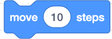

Statement
In programming, a Statement is a command or instruction that the programmer gives to the computer. The program builds on Statements that allow the programmer to command the computer that the computer then implements. The computer program thus consists of a set of Statements. It is a Statement if there is a command in the code block in Scratch.
Examples of Statements in Scratch
This block in the Motion Blocks moves the Sprite a certain number of steps. The step is a very short distance (one pixel). If you enter a negative number (eg –10), the Sprite moves in the opposite direction. Click the block twice to execute the code.
This block from the Looks Blocks say words (in this case "Hi!") in a speech bubble for two seconds.